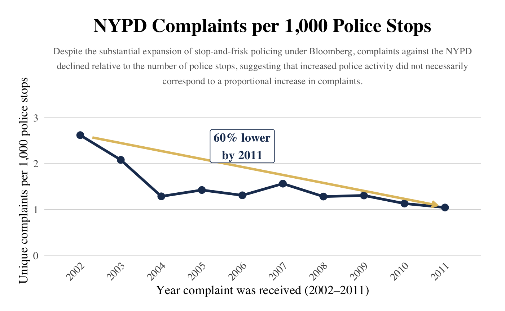

Proposition: Complaints against the NYPD exploded after Bloomberg doubled down on “stop-and-frisk” policy.
FOR the Proposition
Design Decisions and Rationale:
- Grouping data into 4-year electoral intervals (Deception Score: -1)
- Highlighting Bloombergs time in office (Deception Score: 1)
- Adding Allegations (Deception Score: -1.5)
- Annotating the 2002 transition point (Deception Score: 0)
While arranging to data into election cycles is arguably the best layout in a visualization thats critisizing a mayors actions during his term, I personally only made this design desicion in order to obscure the fact that the consistent upward trend for complaints began in 1999 (This would have been revealed in a line chart). Ultimately, I don't see this being too deceptive since Bloomberg was in office for 12 years and the trend never really went down while he was there.
I highlighted the timeframe where Bloomberg was in office as the mayor of New York City. This helps bring the viewers attention right where I want it, and it helps viewers who didin't know when Bloomberg was in office interpret the timeframe. I think this is an earnest addition to the visual since it makes the it take less effort to interpret and prevents someone from losing intrest since they cant tell when Bloomberg was mayor.
Noteably Allegations is not mentioned in the title. Every complaint has allegations, but there can be multiple allegations per complaint. Adding allegations greatly increased the magnitude of the graph and made diferences look more drastic. So adding allegations can make the increase in complaints seem bigger, especially for viewrs who skim and dont look at the legend. Overall, I think adding bars for allegations and not elaborating on that in the title, description or comments was pretty deceptive since it may alter viewers perception of the graph.
This addition is earnest similarly to the highlight, in the sense that it helps add context for viewers lacking it and point them in the right direction. Where the pointer actually goes in the visual might arguably be deceptive. The pointer ends in the middle of the 2002 bin, but it's as if its landing on the allegations bar. I personally just found this to be the cleanest way to add the pointer, but one could argue this adds more emphasis on the already deceptive allegations bars.
AGAINST the Proposition

Design Decisions and Rationale:
- Choosing Complaints per 1000 stops (Deception Score: -1.5)
- Truncating the x-axis at the year 2011 rather than continuing straight through 2013. (Deception score -2)
- The arrow annotation from 2002 to 2011 showing a 60% decrease in complaint rate (Deception Score -1.5)
In contrast to the number of complaints in total, plotting the amount of complaints per 1000 stops allows us to invert the whole story by projecting the trend to be downwards instead of up. Thinking about it deeper, the implementation of the “Stop-and-Frisk” policy would naturally increase the number of stops, and consequently, increase the number of complaints. By measuring the proportion of complaints per 1000 stops, we are able to visualize that the ratio of complaints has actually decreased as Bloomberg stepped into office.
Not shown on the current plot, from 2012-2013, the proportion of complaints suddenly skyrocketed, weakening our focus on our counter proposition (Complaint rates decreased). By only plotting from 2002, the year Bloomberg stepped into office, to 2011, we frame our illustration to a constant downtrend that strengthens our argument going against the original proposition.
This is just a point to point overlay that visually shows how much complaint rates dropped from 2002 to 2011. This line does not tell the whole story of the graph. We picked the highest and lowest points of the plot to exaggerate how much complaint rates have fallen over two points of time. This line does not tell the fitted trendline; the data actually falls hard from 2002-2004, fluctuates but declines slightly from 2004-2011, but climbs back up from 2012-2013.
Final Reflection
[WRITE FINAL REFLECTION PARAGRAPHS HERE.]